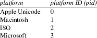
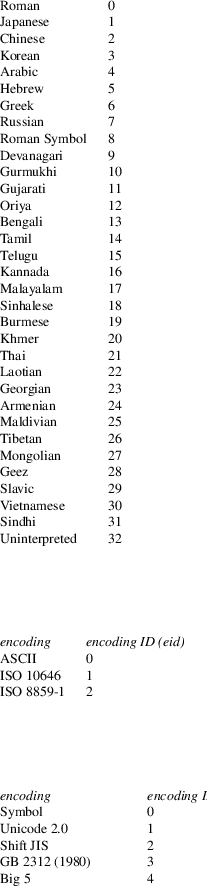
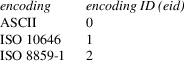
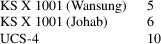
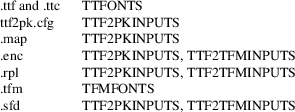
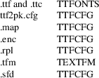

ttf2tfm − build TeX metric files from a TrueType font
ttf2tfm
ttffile[.ttf|.ttc]
[−c caps-height-factor]
[−e extension-factor]
[−E encoding-id]
[−f font-index] [−l]
[−L ligature-file[.sfd]]
[−n] [−N] [−O]
[−p inencfile[.enc]]
[−P platform-id] [−q]
[−r old-glyphname new-glyphname]
[−R replacement-file[.rpl]]
[−s slant-factor]
[−t outencfile[.enc]]
[−T inoutencfile[.enc]]
[−u]
[−v vplfile[.vpl]]
[−V scvplfile[.vpl]]
[−w] [−x]
[−y vertical-shift-factor]
[tfmfile[.tfm]]
ttf2tfm −−version |
−−help
This program extracts the metric and kerning information of a TrueType font and converts it into metric files usable by TeX (quite similar to afm2tfm which is part of the dvips package; please consult its info files for more details on the various parameters (especially encoding files).
Since a TrueType font often contains more than 256 glyphs, some means are necessary to map a subset of the TrueType glyphs onto a TeX font. To do this, two mapping tables are needed: the first (called ‘input’ or ‘raw’ encoding) maps the TrueType font to a raw TeX font (this mapping table is used by both ttf2tfm and ttf2pk), and the second (called ‘output’ or ‘virtual’ encoding) maps the raw TeX font to another (virtual) TeX font, providing all kerning and ligature information needed by TeX.
This two stage mapping has the advantage that one raw font can be accessed with various LaTeX encodings (e.g. T1 and OT1) via the virtual font mechanism, and just one PK file is necessary.
For CJKV (Chinese/Japanese/Korean/old Vietnamese) fonts, a different mechanism is provided (see SUBFONT DEFINITION FILES below).
Most of the
command line switch names are the same as in afm2tfm
for convenience. One or more space characters between an
option and its value is mandatory; options can’t be
concatenated. For historical reasons, the first parameter
can not be a switch but must be the font name.
−c caps-height-factor
The height of small caps made with the −V switch. Default value of this real number is 0.8 times the height of uppercase glyphs.
Will be ignored in subfont mode.
−e extension-factor
The extension factor to stretch the characters horizontally. Default value of this real number is 1.0; if less than 1.0, you get a condensed font.
−E encoding-id
The TrueType encoding ID. Default value of this non-negative integer is 1.
Will be ignored if −N is used.
−f font-index
The font index in a TrueType Collection. Default is the first font (index 0). [TrueType collections are usually found in some CJK fonts; e.g. the first font index specifies glyphs and metrics for horizontal writing, and the second font index does the same for vertical writing. TrueType collections usually have the extension ‘.ttc’.]
Will be ignored for ordinary TrueType fonts.
|
−l |
Create ligatures in subfonts between first and second bytes of all the original character codes. Example: Character code 0xABCD maps to character position 123 in subfont 45. Then a ligature in subfont 45 between position 0xAB and 0xCD pointing to character 123 will be produced. The fonts of the Korean HLaTeX package use this feature. Note that this option generates correct ligatures only for TrueType fonts where the input cmap is identical to the output encoding. In case of HLaTeX, TTFs must have platform ID 3 and encoding ID 5. |
Will be ignored if not in subfont mode.
−L ligature-file
Same as −l, but character codes for ligatures are specified in ligature-file. For example, ‘−L KS-HLaTeX’ generates correct ligatures for the Korean HLaTeX package regardless of the platform and encoding ID of the used TrueType font (the file KS-HLaTeX.sfd is part of the ttf2pk package).
Ligature files have the same format and extension as SFD files. This option will be ignored if not in subfont mode.
|
−n |
Use PS names (of glyphs) of the TrueType font. Only glyphs with a valid entry in the selected cmap are used. |
Will be ignored in subfont mode.
|
−N |
Use only PS names of the TrueType font. No cmap is used, thus the switches −E and −P have no effect, causing a warning message. |
Will be ignored in subfont mode.
|
−O |
Use octal values for all character codes in the VPL file rather than names; this is useful for symbol or CJK fonts where character names such as ‘A’ are meaningless. |
−p inencfile
The input encoding file name for the TTF→raw TeX mapping. This parameter has to be specified in a map file (default: ttfonts.map) recorded in ttf2pk.cfg for successive ttf2pk calls.
Will be ignored in subfont mode.
−P platform-id
The TrueType platform ID. Default value of this non-negative integer is 3.
Will be ignored if −N is used.
|
−q |
Make ttf2tfm quiet. It suppresses any informational output except warning and error messages. For CJK fonts, the output can get quite large if you don’t specify this switch. |
−r old-glyphname new-glyphname
Replaces old-glyphname with new-glyphname. This switch is useful if you want to give an unnamed glyph (i.e., a glyph which can be represented with ‘.gXXX’ or ‘.cXXX’ only) a name or if you want to rename an already existing glyph name. You can’t use the ‘.gXXX’ or ‘.cXXX’ glyph name constructs for new-glyphname; multiple occurrences of −r are possible.
If in subfont mode or if no encoding file is specified, this switch is ignored.
−R replacement-file
Use this switch if you have many replacement pairs; they can be collected in a file which should have ‘.rpl’ as extension. The syntax used in such replacement files is simple: Each non-empty line must contain a pair ‘old-glyphname new-glyphname’ separated by whitespace (without the quotation marks). A percent sign starts a line comment; you can continue a line on the next line with a backslash as the last character.
If in subfont mode or if no encoding file is specified, this switch is ignored.
−s slant-factor
The obliqueness factor to slant the font, usually much smaller than 1. Default of this real number is 0.0; if the value is larger than zero, the characters slope to the right, otherwise to the left.
−t outencfile
The output encoding file name for the virtual font(s). Only characters in the raw TeX font are used.
Will be ignored in subfont mode.
−T inoutencfile
This is equivalent to ‘−p inoutencfile −t inoutencfile’.
Will be ignored in subfont mode.
|
−u |
Use only those characters specified in the output encoding, and no others. By default, ttf2tfm tries to include all characters in the virtual font, even those not present in the encoding for the virtual font (it puts them into otherwise-unused positions, rather arbitrarily). |
Will be ignored in subfont mode.
−v vplfile
Output a VPL file in addition to the TFM file. If no output encoding file is specified, ttf2tfm uses a default font encoding (cmtt10). Note: Be careful to use different names for the virtual font and the raw font!
Will be ignored in subfont mode.
−V scvplfile
Same as −v, but the virtual font generated is a pseudo small caps font obtained by scaling uppercase letters by 0.8 (resp. the value specified with −c) to typeset lowercase. This font handles accented letters and retains proper kerning.
Will be ignored in subfont mode.
|
−w |
Generate PostScript encoding vectors containing glyph indices, primarily used to embed TrueType fonts in pdfTeX. ttf2tfm takes the TFM names and replaces the suffix with .enc; that is, for files foo01.tfm, foo02.tfm, ... it creates foo01.enc, foo02.enc, ... at the same place. |
Will be ignored if not in subfont mode.
|
−x |
Rotate all glyphs by 90 degrees counter-clockwise. If no −y parameter is given, the rotated glyphs are shifted down vertically by 0.25em. |
Will be ignored if not in subfont mode.
−y vertical-shift-factor
Shift down rotated glyphs by the given amount (the unit is em).
Ignored if not in subfont mode or glyphs are not rotated.
−−version
Shows the current version of ttf2tfm and the used file search library (e.g. kpathsea).
|
−−help |
Shows usage information. |
If no TFM file name is given, the name of the TTF file is used, including the full path and replacing the extension with ‘.tfm’.
Contrary to Type 1 PostScript fonts (but similar to the new CID PostScript font format), most TrueType fonts have more than one native mapping table, also called ‘cmap’, which maps the (internal) TTF glyph indices to the (external) TTF character codes. Common examples are a mapping table to Unicode encoded character positions, and the standard Macintosh mapping.
To specify a TrueType mapping table, use the options −P and −E. With −P you specify the platform ID; defined values are:

The encoding ID depends on the platform. For pid=0, we ignore the −E parameter (setting it to zero) since the mapping table is always Unicode version 2.0. For pid=1, the following table lists the defined values:
platform ID = 1

Here are the ISO encoding IDs:
platform ID = 2

And finally, the Microsoft encoding IDs:
platform ID = 3

The program will abort if you specify an invalid platform/encoding ID pair. It will then show the possible pid/eid pairs. Please note that most fonts have at most two or three cmaps, usually corresponding to the pid/eid pairs (1,0), (3,0), or (3,1) in case of Latin based fonts. Valid Microsoft fonts should have a (3,1) mapping table, but some fonts exist (mostly Asian fonts) which have a (3,1) cmap not encoded in Unicode. The reason for this strange behavior is the fact that some old MS Windows versions will reject fonts having a non-(3,1) cmap (since all non-Unicode Microsoft encoding IDs are for Asian MS Windows versions).
The −P and −E options of ttf2tfm must be equally specified for ttf2pk; the corresponding parameters in a map file are ‘Pid’ and ‘Eid’, respectively.
The default pid/eid pair is (3,1).
Similarly, an −f option must be specified as ‘Fontindex’ parameter in a map file.
If you use the −N switch, all cmaps are ignored, using only the PostScript names in the TrueType font. The corresponding option in a map file is ‘PS=Only’. If you use the −n switch, the default glyph names built into ttf2tfm are replaced with the PS glyph names found in the font. In many cases this is not what you want because the glyph names in the font are often incorrect or non-standard. The corresponding option in a map file is ‘PS=Yes’.
Single replacement glyph names specified with −r must be given directly as ‘old-glyphname new-glyphname’ in a map file; −R is equivalent to the ‘Replacement’ option.
You must specify the encoding vectors from the TrueType font to the raw TeX font and from the raw TeX font to the virtual TeX font exactly as with afm2tfm, but you have more possibilities to address the character codes. [With ‘encoding vector’ a mapping table with 256 entries in form of a PostScript vector is meant; see the file T1-WGL4.enc of this package for an example.] With afm2tfm, you must access each glyph with its Adobe glyph name, e.g. ‘/quotedsingle’ or ‘/Acircumflex’. This has been extended with ttf2tfm; now you can (and sometimes must) access the code points and/or glyphs directly, using the following syntax for specifying the character position in decimal, octal, or hexadecimal notation: ‘/.c<decimal-number>’, ‘/.c0<octal-number>’, or ‘/.c0x<hexadecimal-number>’. Examples: ‘/.c72’, ‘/.c0646’, ‘/.c0x48’. To access a glyph index directly, use the character ‘g’ instead of ‘c’ in the just introduced notation. Example: ‘/.g0x32’. [Note: The ‘.cXXX’ notation makes no sense if −N is used.]
For pid/eid pairs (1,0) and (3,1), both ttf2tfm and ttf2pk recognize built-in default Adobe glyph names; the former follows the names given in Appendix E of the book ‘Inside Macintosh’, volume 6, the latter uses the names given in the TrueType Specification (WGL4, a Unicode subset). Note that Adobe names for a given glyph are often not unique and do sometimes differ, e.g., many PS fonts have the glyph ‘mu’, whereas this glyph is called ‘mu1’ in the WGL4 character set to distinguish it from the real Greek letter mu. Be also aware that OpenType (i.e. TrueType 2.0) fonts use an updated WGL4 table; we use the data from the latest published TrueType specification (1.66). You can find those mapping tables in the source code file ttfenc.c.
On the other hand, the switches −n and −N makes ttf2tfm read in and use the PostScript names in the TrueType font itself (stored in the ‘post’ table) instead of the default Adobe glyph names.
Use the −r switch to remap single glyph names and −R to specify a file containing replacement glyph name pairs.
If you don’t select an input encoding, the first 256 glyphs of the TrueType font with a valid entry in the selected cmap will be mapped to the TeX raw font (without the −q option, ttf2tfm prints this mapping table to standard output), followed by all glyphs not yet addressed in the selected cmap. However, some code points for the (1,0) pid/eid pair are omitted since they do not represent glyphs useful for TeX: 0x00 (null), 0x08 (backspace), 0x09 (horizontal tabulation), 0x0d (carriage return), and 0x1d (group separator). The ‘invalid character’ with glyph index 0 will be omitted too.
If you select the −N switch, the first 256 glyphs of the TrueType font with a valid PostScript name will be used in case no input encoding is specified. Again, some glyphs are omitted: ‘.notdef’, ‘.null’, and ‘nonmarkingreturn’.
If you don’t select an output encoding, ttf2tfm uses the same mapping table as afm2tfm would use (you can find it in the source code file texenc.c); it corresponds to TeX typewriter text. Unused positions (either caused by empty code points in the mapping table or missing glyphs in the TrueType font) will be filled (rather arbitrarily) with characters present in the input encoding but not specified in the output encoding (without the −q option ttf2tfm prints the final output encoding to standard output). Use the −u option if you want only glyphs in the virtual font which are defined in the output encoding file, and nothing more.
One feature missing in afm2tfm has been added which is needed by LaTeX’s T1 encoding: ttf2tfm will construct the glyph ‘Germandbls’ (by simply concatenating two ‘S’ glyphs) even for normal fonts if possible. It appears in the glyph list as the last item, marked with an asterisk. Since this isn’t a real glyph it will be available only in the virtual font.
For both input and output encoding, an empty code position is represented by the glyph name ‘/.notdef’.
In encoding files, you can use ‘\’ as the final character of a line to indicate that the input is continued on the next line. The backslash and the following newline character will be removed.
CJKV (Chinese/Japanese/Korean/old Vietnamese) fonts usually contain several thousand glyphs; to use them with TeX it is necessary to split such large fonts into subfonts. Subfont definition files (usually having the extension ‘.sfd’) are a simple means to do this smoothly.
A subfont file name usually consists of a prefix, a subfont infix, and a postfix (which is empty in most cases), e.g.
ntukai23 → prefix: ntukai, infix: 23, postfix: (empty)
Here the syntax
of a line in an SFD file, describing one subfont:
<whitespace> <infix> <whitespace>
<ranges> <whitespace>
<infix> :=
anything except whitespace. It is best to use only alphanumerical characters.
<whitespace> :=
space, formfeed, carriage return, horizontal and vertical tabs -- no newline characters.
<ranges> :=
<ranges>
<whitespace> <codepoint> |
<ranges> <whitespace> <range> |
<ranges> <whitespace> <offset>
<whitespace> <range>
<codepoint> :=
<number>
<range> :=
<number> ‘_’ <number>
<offset> :=
<number> ‘:’
<number> :=
hexadecimal (prefix ‘0x’), decimal, or octal (prefix ‘0’)
A line can be continued on the next line with a backslash ending the line. The ranges must not overlap; offsets have to be in the range 0-255.
Example:
The line
03 10: 0x2349 0x2345_0x2347
assigns to the code positions 10, 11, 12, and 13 of the subfont having the infix ‘03’ the character codes 0x2349, 0x2345, 0x2346, and 0x2347 respectively.
The SFD files in the distribution are customized for the CJK package for LaTeX.
You have to embed the SFD file name into the TFM font name (at the place where the infix will appear) surrounded by two ‘@’ signs, on the command line resp. a map file; both ttf2tfm and ttf2pk switch then to subfont mode.
It is possible to use more than a single SFD file by separating them with commata and no whitespace; for a given subfont, the first file is scanned for an entry, then the next file, and so on. Later entries override entries found earlier (possibly only partially). For example, the first SFD file sets up range 0x10-0xA0, and the next one modifies entries 0x12 and 0x25. As can be easily seen, this algorithm allows for adding and replacing, but not for removing entries.
Subfont mode disables the options −n, −N, −p, −r, −R, −t, −T, −u, −v, −V and −w for ttf2tfm; similarly, no ‘Encoding’ or ‘Replacement’ parameter is allowed in a map file. Single replacement glyph names are ignored too.
ttf2tfm will create all subfont TFM files specified in the SFD files (provided the subfont contains glyphs) in one run.
Example:
The call
ttf2tfm ntukai.ttf ntukai@Big5,Big5-supp@
will use Big5.sfd and Big5-supp.sfd, producing all subfont files ntukai01.tfm, ntukai02.tfm, etc.
ttf2tfm returns 0 on success and 1 on error; warning and error messages are written to standard error.
Both ttf2pk and ttf2tfm use either the kpathsea, emtexdir, or MiKTeX library for searching files (emtexdir will work only on operating systems which have an MS-DOSish background, i.e. MS-DOS, OS/2, Windows; MikTeX is specific to MS Windows).
As a last resort, both programs can be compiled without a search library; the searched files must be then in the current directory or specified with a path. Default extensions will be appended also (with the exception that only ‘.ttf’ is appended and not ‘.ttc’).
kpathsea
The actual version of kpathsea is displayed on screen if you
call either ttf2pk or ttf2tfm with the
−−version command line switch.
Here is a table of the file type and the corresponding kpathsea variables. TTF2PKINPUTS and TTF2TFMINPUTS are program specific environment variables introduced in kpathsea version 3.2:

Please consult the info files of kpathsea for details on these variables.
You should set the TEXMFCNF variable to the directory where your texmf.cnf configuration file resides.
Here is the proper command to find out to which value a kpathsea variable is set (we use TTFONTS as an example). This is especially useful if a variable isn’t set in texmf.cnf or in the environment, thus pointing to the default value which is hard-coded into the kpathsea library.
kpsewhich -progname=ttf2tfm -expand-var=’$TTFONTS’
We select the program name also since it is possible to specify variables which are searched only for a certain program -- in our example it would be TTFONTS.ttf2tfm.
A similar but not identical method is to say
kpsewhich -progname=ttf2tfm -show-path=’truetype fonts’
[A full list of format types can be obtained by saying ‘kpsewhich --help’ on the command line prompt.] This is exactly how ttf2tfm (and ttf2pk) searches for files; the disadvantage is that all variables are expanded which can cause very long strings.
emtexdir
Here the list of suffixes and their related environment
variables to be set in autoexec.bat (resp. in config.sys for
OS/2):

If one of the variables isn’t set, a warning message is emitted. The current directory will always be searched. As usual, one exclamation mark appended to a directory path causes subdirectories one level deep to be searched, two exclamation marks cause all subdirectories to be searched. Example:
TTFONTS=c:\fonts\truetype!!;d:\myfonts\truetype!
Constructions like ‘c:\fonts!!\truetype’ aren’t possible.
MiKTeX
Both ttf2tfm and ttf2pk have been fully
integrated into MiKTeX. Please refer to the
documentation of MiKTeX for more details on file
searching.
Many vptovf implementations allow only 100 bytes for the TFM header (the limit is 1024 in the TFM file format itself): 8 bytes for checksum and design size, 40 bytes for the family name, 20 bytes for the encoding, and 4 bytes for a face byte. There remain only 28 bytes for some additional information which is used by ttf2tfm for an identification string (which is essentially a copy of the command line), and this limit is always exceeded.
The optimal solution is to increase the value of max_header_bytes in the file vptovf.web (and probably pltotf.web too) to, say, 400 and recompile vptovf (and pltotf). Otherwise you’ll get some (harmless) error messages like
This HEADER index is too big for my present table size
which can be safely ignored.
ttf2pk(1),
afm2tfm(1), vptovf(1),
the info pages for dvips and kpathsea
ttf2tfm is part of the FreeType 1 package, a high quality TrueType rendering library.
Werner LEMBERG
<wl@gnu.org>
Frédéric LOYER <loyer@ensta.fr>